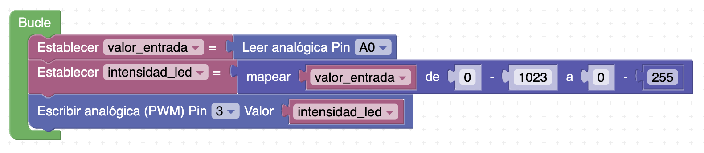
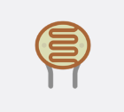
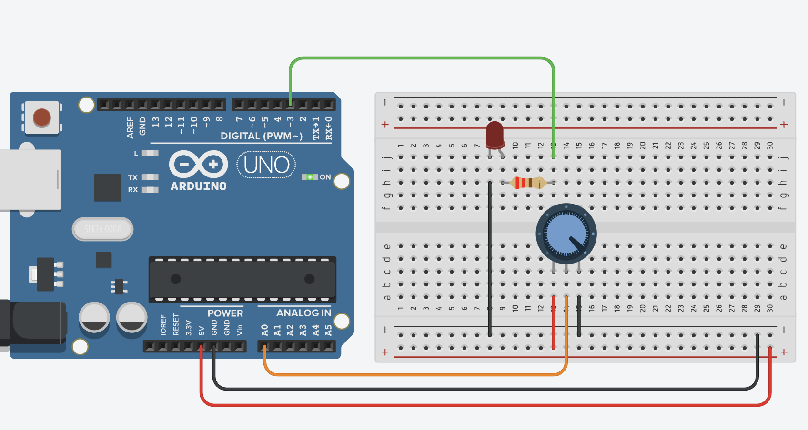

No todo es blanco o negro
Un pulsador solo da dos valores. Pero muchas magnitudes del mundo real (la luz, la temperatura, el giro de una rueda) tienen infinitos valores intermedios. Para leerlas usamos una entrada analógica, que en Arduino devuelve un número de 0 a 1023. El shield trae tres sensores analógicos listos para usar:
| Sensor del shield | Pin | Qué mide |
|---|---|---|
| Potenciómetro (rueda giratoria) | A0 | Cuánto has girado la rueda |
| LDR (fotorresistencia) | A1 | Cuánta luz hay |
| LM35 | A2 | Temperatura |

Convertir con mapear (map)
La entrada analógica da 0–1023, pero el brillo PWM va de 0–255. El bloque mapear (categoría «Matemáticas») convierte un rango en otro. Así, girando el potenciómetro controlas el brillo de un LED de 0 a máximo.
Práctica guiada · Lámpara regulable (y un espía: la consola serie)
- En el Bucle: lee la entrada A0 (potenciómetro), pásala por
mapear (de 0–1023 a 0–255) y escribe el resultado como PWM en el pin 9
(canal rojo del RGB). El patrón de bloques es este:

En el shield: entrada A0, salida pin 9. - Añade un bloque de Comunicaciones → Puerto serie → imprimir con el valor leído, y una espera pequeña (100 ms). Sube el programa.
- Gira la rueda del shield: el rojo del RGB sube y baja de brillo. Y si abres el monitor serie de Arduino IDE (icono de la lupa), verás desfilar el número real que está leyendo la placa (0–1023). Ese «espía» te va a servir en la tarea.
La luz como sensor: la LDR
Una LDR (fotorresistencia) cambia su resistencia según la luz que recibe. Con ella la placa «ve» si hay mucha o poca luz: es el sensor de una farola automática que se enciende de noche. En el shield está en A1; tápala con la mano y la lectura cambia.

Abre el capó (TinkerCAD) · El potenciómetro por dentro
Monta en TinkerCAD, en un circuito llamado S7 gemelo, un potenciómetro (terminal central a A0, extremos a 5V y GND) y un LED con resistencia en un pin PWM. En la imagen el LED está en el pin 3; si lo dejas así, cambia el 9 por el 3 en tu bloque PWM — es lo único que cambia:

Simula y gira el potenciómetro virtual. Curiosidad: la LDR del shield lleva por dentro un montaje llamado divisor de tensión (la LDR + una resistencia fija en serie) para convertir la luz en un voltaje que A1 pueda leer.
Los sensores en el mundo IoT
En el Internet de las Cosas, miles de sensores como los de tu shield recogen datos del entorno y los envían por la red para tomar decisiones. Algunos ejemplos reales:
| Sensor | Aplicación IoT real |
|---|---|
| Temperatura y humedad | Invernaderos y neveras inteligentes que avisan al móvil. |
| Movimiento | Alarmas y luces que se encienden al detectar presencia. |
| Calidad del aire | Estaciones que miden la contaminación de una ciudad. |
| Humedad del suelo | Riego automático que solo riega cuando hace falta. |
| Nivel / distancia | Contenedores de basura que avisan cuando están llenos. |
Tarea D · Farola automática
Programa una farola crepuscular con el shield: cuando haya poca luz sobre la LDR (A1), se enciende el LED azul; con luz suficiente, se apaga. Pasos:
- Usa el monitor serie («el espía») para ver qué valores da A1 con luz normal y tapándola con la mano, y elige tu umbral entre medias.
- Con un bloque si… si no…, compara la lectura de A1 con tu umbral y actúa sobre el LED.
Hazlo en un proyecto llamado D farola. Añade a la tarea «Tareas de Arduino (S2–S7)» la captura de bloques como d_bloques.png y el vídeo donde se vea la farola encenderse al tapar la LDR (papelito con iniciales y curso) como d_farola.mp4. Y como esta es la última de la serie, ahora sí: pulsa «Entregar» con todos los archivos de S2–S7 dentro.
Extensión (opcional) · Termómetro de colores
El LM35 (A2) da un valor que crece con la temperatura. Haz que el RGB se ponga azul con frío, verde templado y rojo con calor (mira los valores con el monitor serie y elige dos umbrales; calienta el sensor apretándolo con los dedos). Acabas de inventar el indicador de una nevera inteligente.